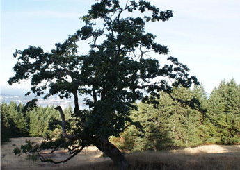

|
| ISSUE #2 |
|
Quercus garrianus: Fire  Photo by David Murray
by Theresa Kishkan In early May of 2007, my husband and I walked through the woodland below Government House in Victoria, under mature Garry oaks. Blue camas bloomed in great drifts like a dream of heaven, punctuated by wild roses and snowberry, fawn lilies and grasses. It was sunny and warm and the heat released a smell that transported me back decades into my childhood. 1965. My family was staying in a motel out towards Colwood. I was ten years old. My parents were searching for a rental house for us now that we were back in Victoria after two years on the east coast. Some days they left my younger brother and me in the care of our two older brothers who were 12 and 14. They hung out with some older kids, the offspring of the motel owners, and my younger brother and I found ways to amuse ourselves. I took books into the area behind the motel, dry grassy bluffs with groves of oaks. The smell was intense—the grass, the leaves, sticky pitch from a few pines, the unexpected twist of onion as I grazed the stems of Allium cernuum. I’d recline in the grass, ants tickling my bare legs, and read Nancy Drew adventures. I longed for a life so exciting, where treasure might turn up in a hollow tree or under a bridge, where villains might be thwarted by polite requests, where a girl would rise from a shaking-up by an escaped convict, straighten her stocking seams and drive away in her roadster for the next case. I was absorbing the dry heat, the pollens and odours as I read, my body at rest on golden grass that flattened under my weight and felt like satin to the touch. Later in the day, after my parents returned to report on possible houses and to urge us to gather up our swimming gear so we could take a picnic to Beaver Lake, I’d come back to consciousness reluctantly. The green camping stove would be stowed in the back of the station wagon with Star, our Labrador. We’d eat wieners in buns spread with green relish and bright yellow mustard and drink fruit punch from a Coleman thermos jug. Swimming in the weedy lake, swans on the opposite shore guarding their young, I’d marvel at how I could remove myself so completely from my family and then return to them as though nothing significant had happened. And to anyone else, nothing had.
|
This is an excerpt of the full article. To view complete text, please subscribe . You may also purchase a back issue |
Lake publishes fiction, poetry, critical essays, interviews, reviews and visual arts related to the environment.
|
Lake - Journal of Arts and Environment
Faculty of Creative and Critical Studies at the University of British Columbia Okanagan |
| web design by Idea Bureau |